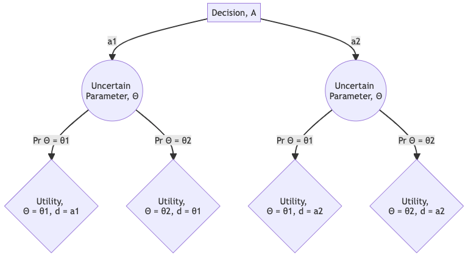
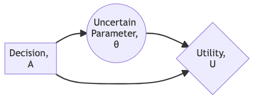
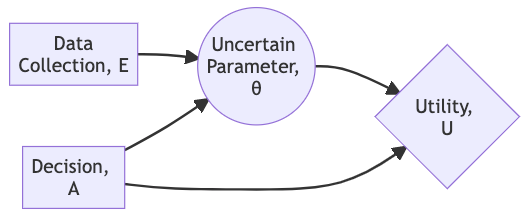
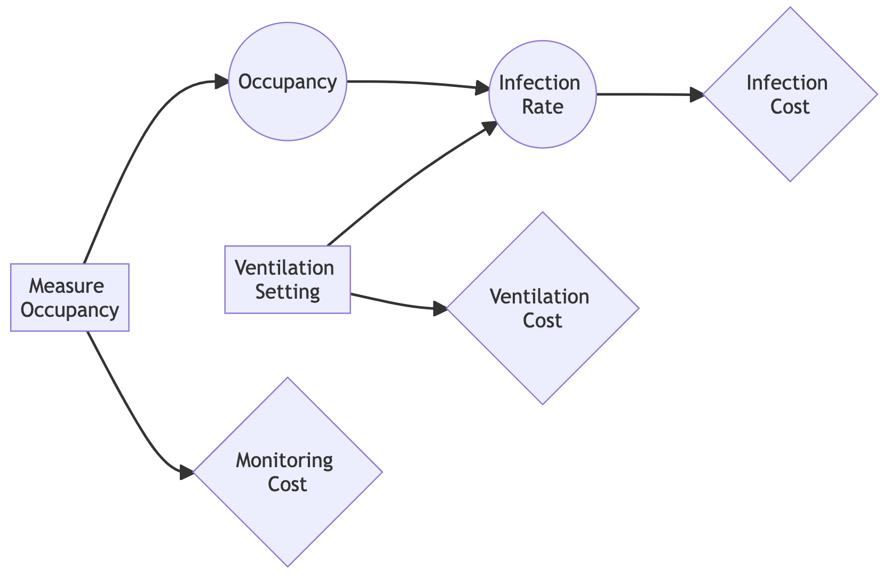
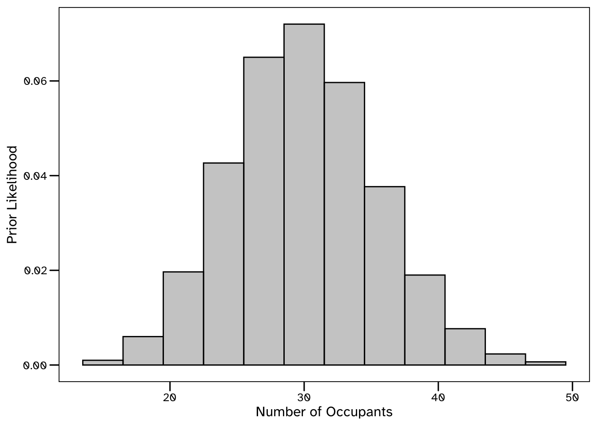
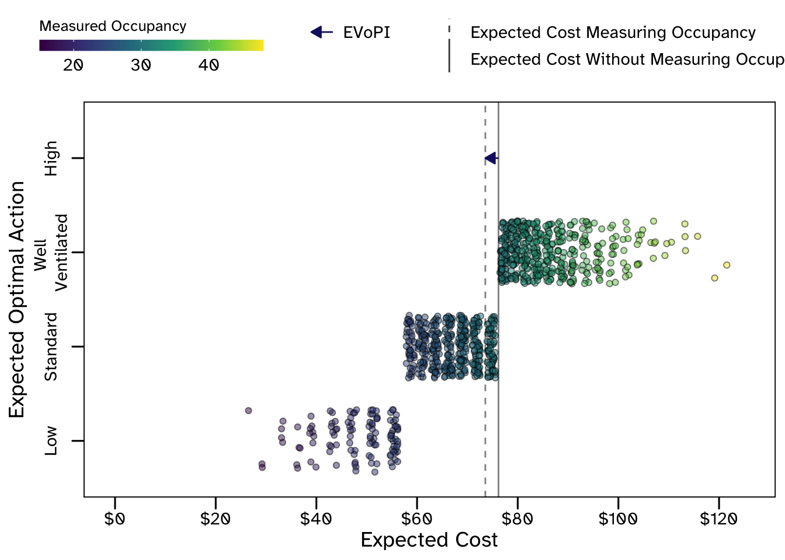
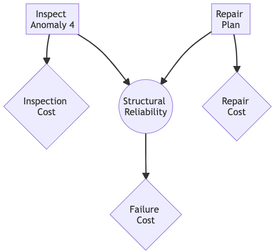
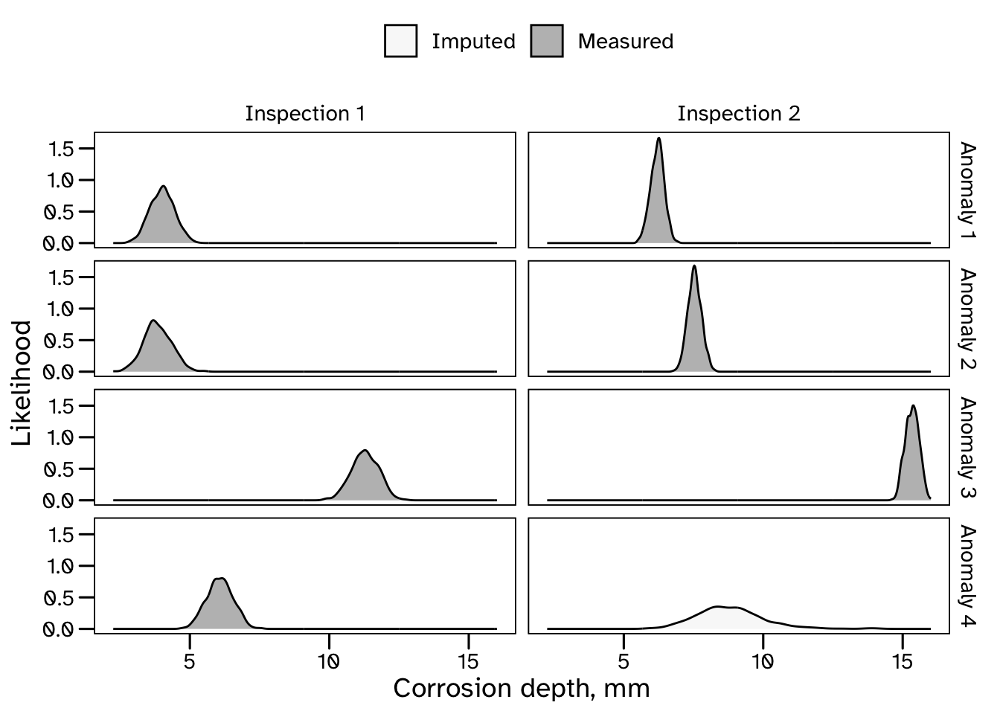
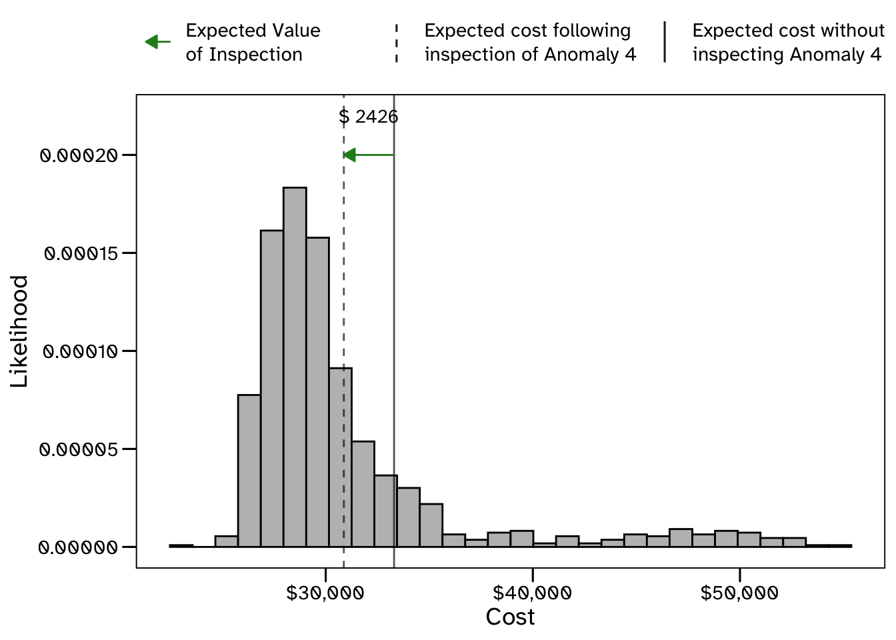

TLDR
These are the slides I presented at the Bayes@Lund2023 conference in January. I spoke about identifying data requirements (for engineering systems) using value of information analysis.
Uncertainty and Decisions
“Many if not most statistical analyses are performed for the ultimate goal of decision making.”
Andrew Gelman et. al, Bayesian Data Analysis.“Bayesian analysis and decision theory go rather naturally together, partly because of their common goal of utilizing non-experimental sources of information, and partly because of deep theoretical ties.”
Prof. James Berger, Statistical Decision Theory and Bayesian Analysis.“It is important that all problems of inference be visualized as problems of decision.”
Prof. Ian Jordaan, Decisions Under Uncertainty.“It (statistics) is seldom really appreciated for what it can be used for, namely as a basis for assessing information and organising the process of acquiring knowledge in pursuit of supporting decision making.”
Prof. Michael Faber, Statistics and Probability Theory: In Pursuit of Engineering Decision Support.
Uncertainty and Decisions


Select action \(a^{*}\) associated with the highest expected utility:
\[\begin{equation} a^{*} = \arg \max_{a \in A} \mathop{\mathbb{E}}_{\theta \sim \pi(\theta)} \big[ u(a, \theta) \big] \end{equation}\]
How and to what extent will this data facilitate improved decision making?
\[\begin{equation} VoI(e_{i}) = \mathop{\mathbb{E}}_{\theta \sim \pi(\theta), \\z \sim f(z \mid \theta)} \big[ u(e_{i}, z, a^{*}, \pi(\theta \mid z) \big] - \mathop{\mathbb{E}}_{\theta \sim \pi(\theta)} \big[ u( a^{*}, \pi(\theta)) \big] \end{equation}\]Examples
# For working with data
using CSV, DataFrames, DataFramesMeta, RCall
# For describing probabilistic models
using Distributions, Random, LatinHypercubeSampling, StanSample, MCMCChains
# For describing and solving decision problem
using JuMP, HiGHS, DecisionProgramming, LinearAlgebraBuilding Ventilation
Specify the ventilation setting for an office building:
- Low
- Standard
- Well Ventilated
- High
Higher ventilation rates decrease the risk of infection from airborne disease, but cost more to run.

s = 3600; venting = [1, 3, 5, 10] ./ s; κ = 0.39 / s; λ = 0.636 / s
loss_rate = venting .+ κ .+ λ; tₘ = 8 * s; n_step = 100
loss_rate = venting .+ κ .+ λ; tₘ = 8 * 3600; n_step = 100
function Pr_infection(occupancy::Int64, Vol::Float64, loss::Float64, Δt = tₘ / (n_step - 1), infection_rate = 0.02, iᵣ = 5.21 * 10^-4, Cᵣ = 410, Nᵣ = 0.453)
C = zeros(n_step); nᵢₙₕ = zeros(n_step); Prᵢ = zeros(n_step); t = zeros(n_step);
N = occupancy * infection_rate
for i in 2:(n_step)
t[i] = t[i-1] + Δt
C[i] = N * Nᵣ / (Vol * loss) + (C[i-1] - N * Nᵣ / (Vol * loss)) * exp(-1 * loss * Δt)
nᵢₙₕ[i] = nᵢₙₕ[i-1] + iᵣ * Δt * C[i]
Prᵢ[i] = 1 - exp(-1 * nᵢₙₕ[i] / Cᵣ)
end
return last(Prᵢ)
end
function pr_inf_pop(pr_inf::Float64, occupants::Int64)
return Binomial(occupants, pr_inf) |> x -> pdf.(x, collect(0:occupants))
end
function draw_lhs(dist, n::Int)
samples = randomLHC(n + 2, 1) |>
x -> scaleLHC(x, [(0, 1)])[:, 1] |>
x -> filter(∉((0, 1)), x) |>
x -> sort(x) |>
x -> quantile(dist, x)
return samples
endλpr = 30; n_samples = 1000
occupancy_model = Poisson(λpr); occupancy_samples = draw_lhs(occupancy_model, n_samples)
vent_options = Dict("Low" => 5, "Standard" => 30, "Well_Ventilated" => 45, "High" => 90)
vent_states = keys(vent_options) |> x -> collect(x)
vent_costs = [vent_options[state] for state in vent_states]
infection_states = ["Infected", "Uninfected"]
sickness_costs = Dict("Sick_Day" => 115 * 3)
function exp_opt_venting(occupants::Vector{Int64} = occupancy_samples, optimiser = HiGHS.Optimizer)
occupancy_states = append!(["0"], string.(occupants))
# Initialise the influence diagram
occupancy_decision = InfluenceDiagram()
# Create structure of influence diagram
add_node!(occupancy_decision, DecisionNode("Ventilation", [], vent_states))
add_node!(occupancy_decision, ChanceNode("Occupancy", [], occupancy_states))
add_node!(occupancy_decision, ValueNode("Cost_Infection", ["Ventilation", "Occupancy"]))
add_node!(occupancy_decision, ValueNode("Cost_Ventilation", ["Ventilation"]))
generate_arcs!(occupancy_decision)
# Calculate the probability of infection for each ventilation option
pr_inf = [Pr_infection.(o, 2000.0, loss_rate) for o in occupants] |>
x -> [v[i] for i in 1:4 for v in x] |>
x -> [x[1:length(occupants)],
x[length(occupants)+1:2*length(occupants)],
x[2*length(occupants)+1:3*length(occupants)],
x[3*length(occupants)+1:4*length(occupants)]]
pr_low = pr_inf[1]; pr_std = pr_inf[2]; pr_well = pr_inf[3]; pr_high = pr_inf[4]
# Calculate the probability of each possible number of total infections in the building
# ...and the associated expected costs due to sickness
infection_df = DataFrame(occupants = occupants,
pr_inf_low = pr_inf_pop.(pr_low, occupants),
pr_inf_std = pr_inf_pop.(pr_std, occupants),
pr_inf_well = pr_inf_pop.(pr_well, occupants),
pr_inf_high = pr_inf_pop.(pr_high, occupants)) |>
x -> @rtransform(x, :cost_sick = [sickness_costs["Sick_Day"] * o for o in reverse(:occupants:-1:0)]) |>
x -> @rtransform(x, :EC_low = :pr_inf_low .* :cost_sick |> x -> sum(x)) |>
x -> @rtransform(x, :EC_std = :pr_inf_std .* :cost_sick |> x -> sum(x)) |>
x -> @rtransform(x, :EC_well = :pr_inf_well .* :cost_sick |> x -> sum(x)) |>
x -> @rtransform(x, :EC_high = :pr_inf_high .* :cost_sick |> x -> sum(x)) |>
x -> @rselect(x, :occupants, :EC_low, :EC_std, :EC_well, :EC_high)
# Assigning probabilities and utilities to diagram
Pr_occ = ProbabilityMatrix(occupancy_decision, "Occupancy")
C_inf = UtilityMatrix(occupancy_decision, "Cost_Infection")
C_vent = UtilityMatrix(occupancy_decision, "Cost_Ventilation")
Pr_occ = append!([0.0], repeat([1/length(occupants)], length(occupants)))
C_inf["Low", :] = append!([0.0], infection_df.EC_low)
C_inf["Standard", :] = append!([0.0], infection_df.EC_std)
C_inf["Well_Ventilated", :] = append!([0.0], infection_df.EC_well)
C_inf["High", :] = append!([0.0], infection_df.EC_high)
C_vent["Low"] = vent_options["Low"]; C_vent["Standard"] = vent_options["Standard"]
C_vent["Well_Ventilated"] = vent_options["Well_Ventilated"]; C_vent["High"] = vent_options["High"]
add_probabilities!(occupancy_decision, "Occupancy", Pr_occ)
add_utilities!(occupancy_decision, "Cost_Infection", C_inf)
add_utilities!(occupancy_decision, "Cost_Ventilation", C_vent)
# generate the full influence diagram
generate_diagram!(occupancy_decision)
# Define and run solver
decision_model = JuMP.Model(optimiser); set_silent(decision_model)
z = DecisionVariables(decision_model, occupancy_decision)
x_s = PathCompatibilityVariables(decision_model, occupancy_decision, z)
Exp_Cost = expected_value(decision_model, occupancy_decision, x_s)
@objective(decision_model, Min, Exp_Cost)
optimize!(decision_model)
# Process results
Z = DecisionStrategy(z)
U_dist = UtilityDistribution(occupancy_decision, DecisionStrategy(z))
exp_opt_decision = DataFrame(u_opt = LinearAlgebra.dot(U_dist.p, U_dist.u),
a_opt = vent_states[argmax(Z.Z_d[1])])
return exp_opt_decision
endexp_opt_venting (generic function with 3 methods)
prior_ventilation_decision = exp_opt_venting()1×2 DataFrame
Row │ u_opt a_opt
│ Float64 String
─────┼───────────────────
1 │ 76.1801 StandardBuilding Ventilation
Expected value of measuring occupancy
measure_occupancy_df = DataFrame()
for o in occupancy_samples
append!(measure_occupancy_df, exp_opt_venting([o]))
end
prior_cost = prior_ventilation_decision.u_opt[1]
prepost_cost = mean(measure_occupancy_df.u_opt)
VoPI = prior_cost - prepost_cost
Inspecting for Corrosion
Identify a repair plan for \(10\) locations of corrosion damage:
\[\begin{equation} CGR = \dfrac{d_{i2} - d_{i1}}{T_{i2} - T_{i1}} \end{equation}\]\(2\) inspections have been completed
Inspection \(2\) was incomplete
Should the inspection team return to location \(4\)?

functions{
real log_norm_sigma(real norm_mu, real norm_sigma){
return log(1 + (norm_sigma^2 / norm_mu^2));
}
real log_norm_mu(real norm_mu, real norm_sigma){
return log(norm_mu) - 0.5 * log_norm_sigma(norm_mu, norm_sigma)^2;
}
}
data {
int <lower = 1> N; // Number of data points
int <lower = 1> n_A; // Number of anomalies
int <lower = 0> n_M; // Number of anomalies missed
int <lower = 1> ID [N]; // Defect identifier
vector [n_A] depth_i1; // Measured corrosion depth
vector [n_A] depth_i2; // Measured corrosion depth
vector <lower = 0> [n_A] error_i1; // Measurement error parameter
vector <lower = 0> [n_A] error_i2; // Measurement error parameter
real d_years; // Time of measurement
real mu_mu_beta; // Prior corrosion growth rate parameter
real <lower = 0> sigma_mu_beta; // Prior corrosion growth rate parameter
real <lower = 0> rate_sigma_beta; // Prior corrosion growth rate parameter
real mu_depth_imp; // Prior on missing data
real <lower = 0> sigma_depth_imp; // Prior on missing data
}
parameters {
real mu_beta;
real <lower = 0> sigma_beta;
vector <lower = 0> [n_A] depth_true_i1;
vector <lower = 0> [n_A] delta_depth;
}
transformed parameters {
vector [n_A] depth_true_i2 = depth_true_i1 + delta_depth;
vector [n_A] growth; // Growth rate depth of corrosion
for (i in 1:n_A){
growth[i] = (depth_true_i2[i] - depth_true_i1[i]) / (d_years);
}
}
model {
// Model
for (n in 1:n_A) {
if (ex_1[n] == 0){
depth_i1[n] ~ normal(depth_true_i1[n], error_i1[n]);
}
if (ex_1[n] == 1) {
depth_true_i1[n] ~ lognormal(mu_depth_imp, sigma_depth_imp);
}
if (ex_2[n] == 0){
depth_i2[n] ~ normal(depth_true_i2[n], error_i2[n]);
}
if (ex_2[n] == 1) {
depth_true_i2[n] ~ lognormal(mu_depth_imp, sigma_depth_imp);
}
}
growth ~ lognormal(mu_beta, sigma_beta);
// Priors
target += normal_lpdf(mu_beta | mu_mu_beta, sigma_mu_beta);
target += exponential_lpdf(sigma_beta | rate_sigma_beta);
}
generated quantities {
real CGR_pp = lognormal_rng(mu_beta, sigma_beta);
}
Inspecting for Corrosion
Expected value of completing inspection
| Anomaly ID | Pr(fail) | Cost | Action, a* |
|---|---|---|---|
| 1 | 0.000 | 0 | No action |
| 2 | 0.000 | 0 | No action |
| 3 | 1.000 | 10000 | Repair |
| 4 | 0.042 | 4200 | No action |
| 5 | 1.000 | 10000 | Repair |
| 6 | 0.000 | 0 | No action |
| 7 | 0.000 | 0 | No action |
| 8 | 0.056 | 5600 | No action |
| 9 | 0.001 | 100 | No action |
| 10 | 0.034 | 3400 | No action |

Some concluding thoughts
- Explictly relate Bayesian models to underlying decisions:
- Consistent and coherent results on an intereptable scale
- Quantify expected value of collecting data
- Challenges:
- Defining problem, e.g. identifying sources of value.
- Computation/combinatorics…
- Further work…